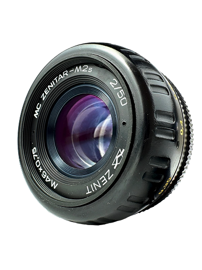
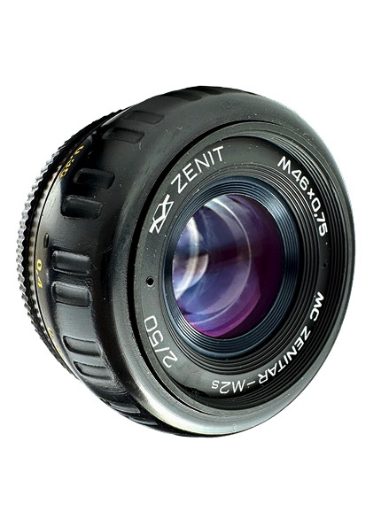
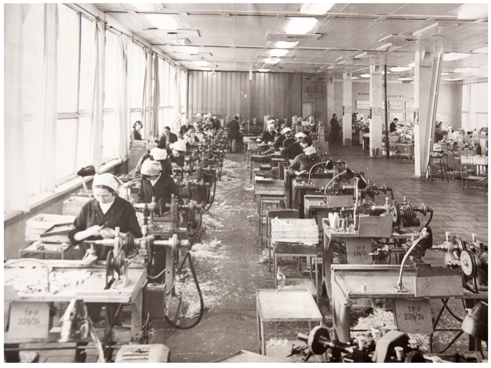

О Нас
Валдайский завод «Юпитер» построили в городе Валдай в 1973 году для производства объективов к фотокамерам «Зенит».


В начале 1970-х годов в СССР был большой дефицит, включая фотокамеры и объективы. «Зенит» считался одной из лучших камер того времени. Завод «Юпитер» строили как филиал Красногорского оптико-механического завода и поставлял ему основную часть продукции. Предприятие разместили в небольшом городке с населением около 20 тысяч человек, хотя по проекту там должно было работать примерно 8 тысяч сотрудников.
Производство было массовым: каждый месяц выпускали около 30 000 объективов. Поэтому в цехах стояло много станков-автоматов, а технологии подбирались под такой масштаб. Основные процессы включали изготовление линз диаметром от 10 до 100 мм и нанесение просветляющих и отражающих покрытий.

Также небольшими партиями выпускали широкоугольные объективы «Мир» и «Юпитер», а «Вариозенитар» готовили к массовому производству. На заводе работала военная приемка для нужд Министерства обороны.
В настоящее время
Сегодня «Юпитер» продолжает активно развиваться. Завод получил крупный государственный заказ на производство оптики, что позволило сохранить рабочие места и начать расширение.
Что завод выпускает сейчас:
• Прицелы и приборы для армии (в том числе для экипировки «Ратник»);
• Приборы ночного видения, бинокли и тепловизоры;
• Лазерные дальномеры и оптические детали.
Кроме того, с недавнего времени предприятие освоило производство современных беспилотников с тепловизионными камерами. Такие дроны помогают работать в сложных условиях и при плохой видимости.
Сейчас на заводе работает около 260 человек, и в планах — увеличить штат до 430 специалистов.
Оптика специального назначения
© ЗАО «Завод Юпитер»
Наверх ↑